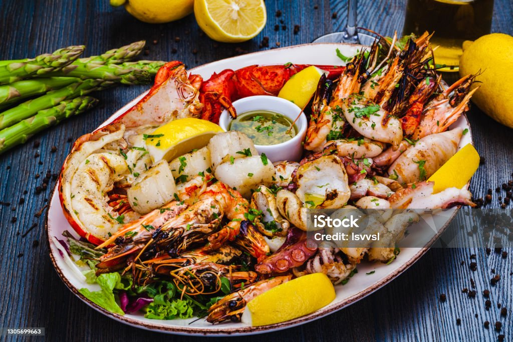

Seafood
Home

Description
A quick and easy seafood dish made with shrimp, garlic, butter, and lemon.
Ready in minutes.
Ingredients
- Shrimp
- Butter
- Garlic
- Lemon
- Salt and pepper
Steps
- Season shrimp with salt and pepper.
- Melt butter in a pan and add garlic.
- Add shrimp and cook until pink.
- Squeeze lemon over shrimp.
- Serve immediately.